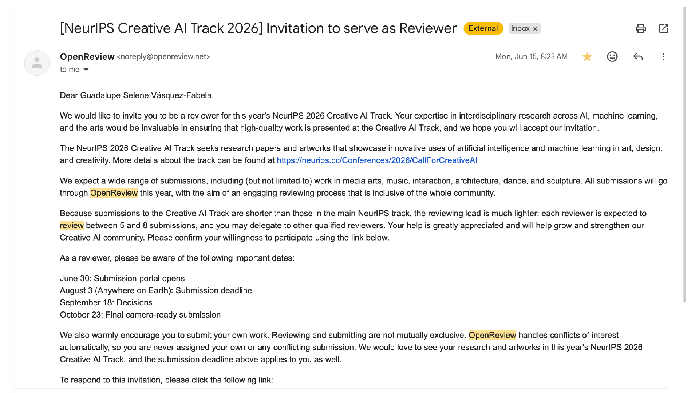

NeurIPS Creative AI Track 2025 · Artwork
Abstract
"The Most Accurate Fortune Teller" is not just a toy, but a philosophical provocation. Using biometric input (heart rate), emotional feedback (vibration in a heart-beat pattern), and artificial intelligence, it simulates the generation of a meaningful message, at the same time it intentionally manipulates perception to expose the epistemic shallowness behind it. Its purpose is demonstrating how easily people can attribute meaning and depth to vague data-driven outputs when framed with emotional cues, deceptive seduction, and technological complexity that looks mystical. THIS IS A CRITIQUE, NOT A TUTORIAL.
Quality
The work is conceptually clear, drawing on historical and philosophical references to frame the toy as a critique of pseudoscience. However, the technical side is basic, using a simple heart rate sensor and pre-scripted AI outputs.
Clarity
The artistic intent is clear and the critique of AI mystification is easy to follow, but the process feels underdeveloped. As a critical gesture, it could be pushed further.
Originality
The use of AI to parody fortune telling and expose epistemic emptiness is conceptually interesting, though the implementation — mapping heart rate ranges to fortune types — is straightforward.
Significance
The project's strength lies in sparking reflection about trust in AI and pseudoscience. Yet the interaction design may undermine its impact: assigning "anxious" fortunes to high heart rates lacks clear rationale, and could frustrate or disengage audiences rather than provoke critical insight.
Strengths
Weaknesses
Suggestion
Exploring collective or dialogic interactions (multiple users comparing fortunes) might also strengthen the piece's performative and critical impact.
Rating
2: Ok but not good enough — weak rejection
Confidence
4: The reviewer is confident but not absolutely certain.
Author's Response
This started with fortune teller games — the kind everyone's played at a party or a sleepover. Given the program's utopia/dystopia theme, that felt exactly right: every one of those games has the same thing at its core, an uncertainty about the future, and a fortune teller is always more fun as a group activity than alone.
The object itself is a resin heart with a vibrating sensor inside, controlled by four knobs that let you personalize its heartbeat pattern before a session starts. The goal was simple: make something interesting enough to hold that it primes the person to actually be receptive to what comes next. That part is a direct nod to the psychics I grew up around in Mexico, who often lead people through small rituals meant to ease them into a state where they're more susceptible to "enlightenment" — or at least more open to a new idea. A screen shows the instructions and the fortune, an infrared sensor picks up a wave of the hand to trigger a reading, and a speaker plays a suitably dramatic, magical tone while the message loads.
None of that technical layer was there to prove the fortunes are accurate — it was there to demonstrate the opposite. As creators, it's easy to assume that because we put real effort into technical features, the project must therefore work, or mean something. That's an uncomfortable thing to admit about your own work: technical complexity doesn't guarantee actual insight, and can just as easily be used to dress up nonsense. It's worth asking yourself that question directly, or you risk becoming a pseudo-science practitioner without noticing.
The set was also deliberately made to look thrown-together, because that's how real fortune-telling sessions usually look — improvised, a little makeshift. Some read that as laziness. It was a conscious choice, and honestly the same argument as the tech, aimed at the aesthetics instead.
With full respect and considerable amusement:
Some time later, the same conference invited its author to review submissions for the 40th NeurIPS, Creative Track. The machine notes this without comment. The machine assumes you'll draw your own conclusion.

Invitation screenshot · NeurIPS 40th Edition, Creative Track
The Most Accurate Fortune Teller
AI-Enhanced Pseudoscientific Toy
Tap below to consult the oracle. Your biometric data has already been recorded and deemed highly symbolic.
* No actual biometric data is collected. Any perceived meaning is your own projection. This is the point.